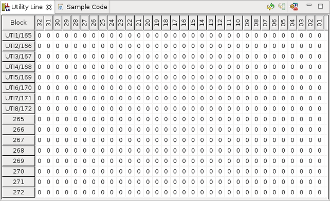
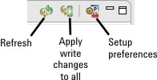

Utility Line view
The Utility Line View is part of the Hardware Perspective and provides an interface for querying utility line read and write states and setting utility line write states when you are debugging your test setup.
Utility lines are provided on the V93000 test head to control external devices such as relays and indicators or to read from external devices.
The Utility Line view enables you to monitor or control all utility lines, including those that are not defined in the pin configuration. (Defining utility line names or utility purposes in the pin configuration is required when you control the write states of the utility lines using the routing sets created in the Routing Setup Tool.)
The following screen shot shows the Utility Line view for 32 utility lines per pogo block.

The left column of the Utility Line view represents the utility pogo blocks. For the first eight utility pogo blocks, the displayed identifier is a combination of the legacy "UTI#" and the new three digit pogo block number. The screen shot above also shows eight more pogo blocks of a second optional Utility Card.
For more information, refer to DUT interface layout and to section Utility pogo block mapping in Utility pogo block - Utility Card (V93000 EXA Scale systems).
Icons in the Utility Line view
There are three icons at the top of the Utility Line view.

- Clicking the Setup Preferences icon opens a preference window with the same settings of the Utility Line preference page.
- Clicking the Refresh icon performs a manual refresh of the Utility Line View.
- The center icon is used for applying write changes to all utility blocks.
Functional changes
- Introduced before SmarTest 6.3.2
- SmarTest 6.5.3: In the Utility Line View, the utility lines are shown with bit numbers 01 to 16.
- SmarTest 7.2.0: Utility Purpose view introduced
- SmarTest 7.10.1: Three-digit utility pogo block designator on EXA Scale systems.